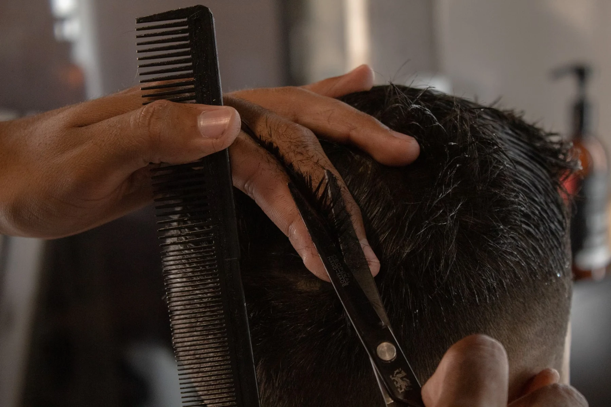
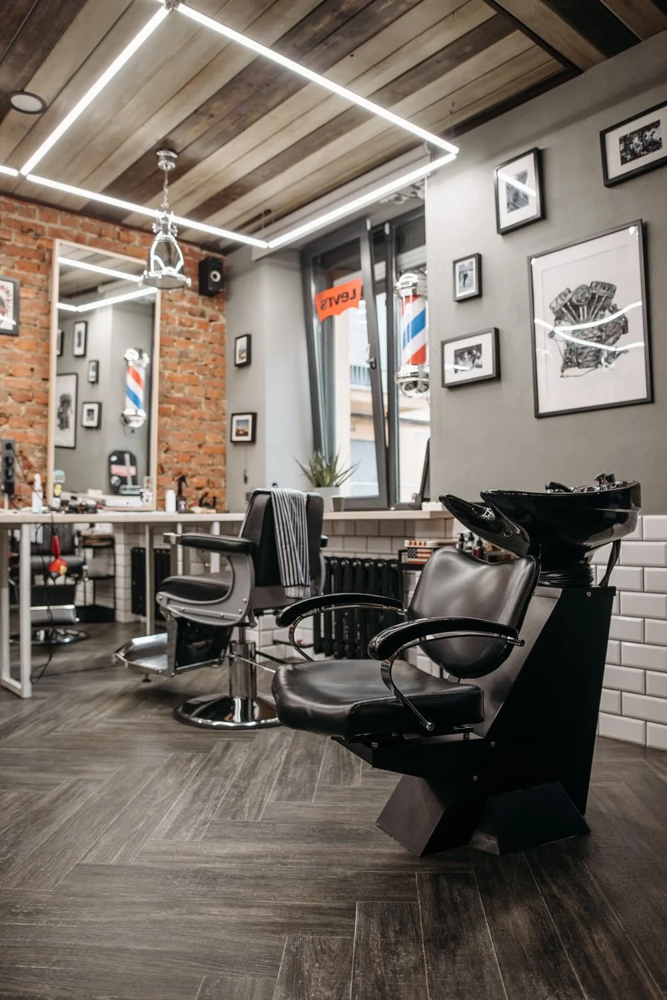

An independent barbershop concept
A proper cut.
Your own way.
Clean fades. Considered scissor work. A beard that actually has a shape. Find your service and make yourself at home.
Find your cut
A close look at the craft.The service menu · sample prices
No overthinking.
Just the right cut.
Pick a direction. Explore the appointment preview. A real booking integration would confirm the service, timing and availability with the shop.

The shop, in focus
Take a seat.
Stay a while.
A strong barbershop identity deserves more than a list of prices. This concept connects the atmosphere, the craft and a straightforward route to a visit.
Stock photography sets the mood for this imagined shop.
Before
you roll in.
Are these real prices and appointments?
No. OFFCUT is an independent website concept. Prices, durations and services are illustrative. The planner does not show live availability or send bookings.
Can I choose a service first?
Yes. Select any service above and the appointment preview carries your choice through. You can change it inside the planner.
Where is the shop?
This is an imagined business used to demonstrate web design and interaction. No physical location, team or client results are claimed.